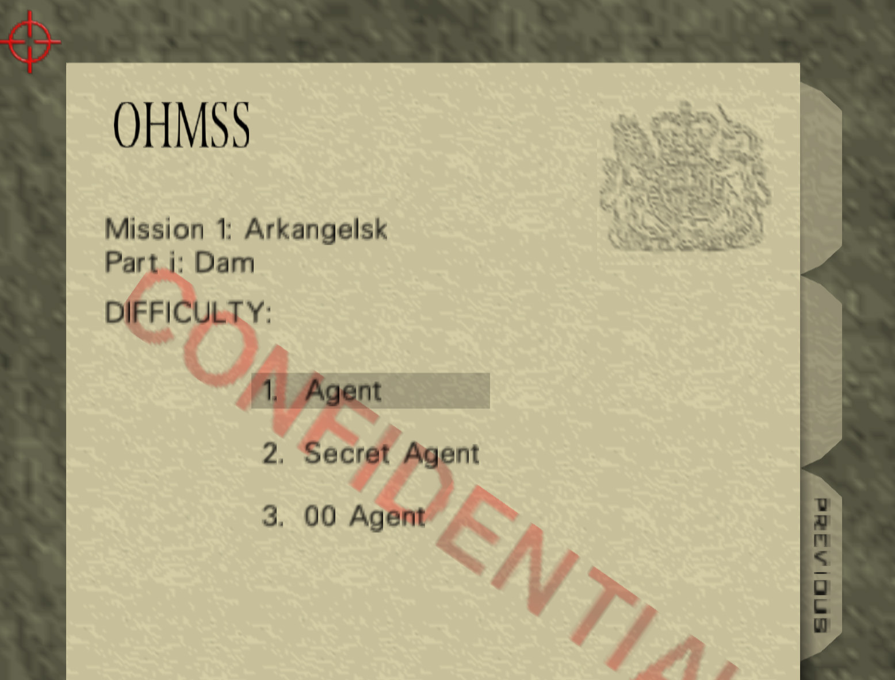
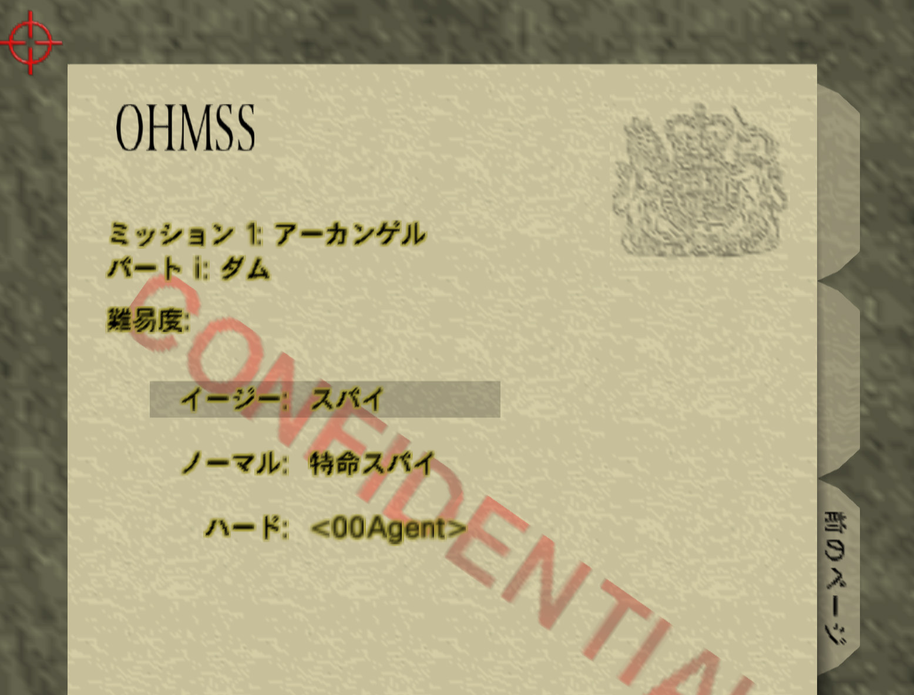

Versions
Overview
This page is under construction.
GoldenEye 007 has three versions for the three major console regions of the time: NTSC-U (North America and much of Latin America), PAL (Europe and most of the rest of the world), and NTSC-J (Japan). The versions are largely similar, but were compiled weeks apart and do have some differences. According to the game's decompiled code, these are the compile dates for the three versions:
- NTSC-U — Jun 29 1997 20:46:05
- NTSC-J — Jul 10 1997 14:53:37
- PAL — Jul 31 1997 14:53:03
The biggest difference between versions is the frame rate. The two NTSC versions run at 29.97 frames per second (Source) while PAL runs at 25 frames per second. This means the NTSC versions can run at a higher frame rate, but in practice sometimes fail to reach it. Players describe the PAL version as having a more stable frame rate. The slower PAL frame rate gives the Nintendo 64 more time to complete its calculations each frame, and thus slowdowns are a little less common.
The game itself was only released in two languages: English and Japanese. Sometimes the packaging and instruction booklet were translated into other languages, such as this one in Danish, Swedish, and Finnish.
Unlike some other Nintendo 64 games such as Perfect Dark, GoldenEye never had a revision to fix bugs or add features.
Below is a map of the approximate GoldenEye regions. I say approximate because some countries such as South Korea and the Philippines did not have a dedicated release and had to import their cartridges. NTSC-U and NTSC-J Nintendo 64 consoles are actually compatible. The only region lockout comes from the physical shape of the tabs on the back of the cartridges. This great video from GoldenEye speedrunner MadmanFlechr teaches how to modify a NTSC-J cartridge to play on a NTSC-U console and vice versa.

Release Timeline
- Aug 23, 1997 GoldenEye 007 NTSC-J release.
- Aug 25, 1997 GoldenEye 007 NTSC-U release.
- Nov 7, 1997 GoldenEye 007 PAL release.
NTSC-U and PAL Differences
Spellings
American English spellings are changed to British English in the PAL release. This is a non-exhaustive list of spelling changes:
- armor → armour
- rumored → rumoured
- minimize → minimise
- neutralize → neutralise
- defense → defence
- center → centre
Briefings
Some briefings were reworded for the PAL version:
| Facility — Q Branch | |
|---|---|
| NTSC-U | PAL |
| Now listen carefully, Bond. Those bombs will be armed as soon as the last one is set. Don't be too close when you set them off or you'll go up in flames as well, and while you're at it, please try and bring back that door-opener undamaged for once. Too much rough handling like the last mission and it might go wrong at a bad time. Honestly 007, sometimes I think you damage your equipment on purpose. | Now listen here, Bond. Be sure to place the mines carefully, otherwise you won't take out all the tanks in the bottling room. Don't be too close when you set them off or you'll go up in flames as well, and while you're at it, please try and bring back that door-opener undamaged for once. Honestly 007, sometimes I think you damage your equipment on purpose. |
The NTSC-U line about the bombs being armed when the last one is set isn't accurate. Remote Mines are armed as soon as you throw them. The PAL line was changed to be more accurate and helpful. The line about rough handling had to be dropped to make the text fit.
| Frigate — Background | |
|---|---|
| NTSC-U | PAL |
| A demonstration of the Pirate stealth helicopter by the French military has been unexpectedly postponed. Official channels insist that nothing is wrong but unofficially MI6 has been asked to help salvage a very tricky hostage situation on board the frigate La Fayette. It seems that the Janus crime syndicate will stop at nothing in its attempt to hijack the helicopter. | A demonstration of the Pirate stealth helicopter by the French military has been unexpectedly postponed. Official channels insist that nothing is wrong but unofficially MI6 has been asked to help salvage a very tricky hostage situation on board the frigate La Fayette. It seems that a crime syndicate called 'Janus' will stop at nothing in its attempt to hijack the helicopter. |
The PAL change makes sense here since the player is not introduced to the Janus Crime Syndicate prior to this.
| Frigate — Q Branch | |
|---|---|
| NTSC-U | PAL |
| The French have kindly given us technical details of the Pirate so I've managed to convert this tracker bug into quite a clever little chap. It's undetectable and it locks out all weapon firing commands. Janus is also threatening to blow up the ship. They are most likely to have placed explosives on the bridge and in the engine room. Take care, 007, and be certain to use the bomb defuser correctly. | The French have kindly given us technical details of the Pirate so I've managed to convert this tracker bug into quite a clever little chap. It's undetectable and will lock out weapon firing. Janus is also threatening to blow up the ship. They are most likely to have placed explosives on the bridge and in the engine room. Take care, 007, and be certain to use the bomb defuser correctly. |
Very small change in wording here. I think I like the NTSC-U version better, actually.
PAL and NTSC-J Shared Differences with NTSC-U
This section is for changes made after the final NTSC-U compile. That means the PAL and NTSC-J got these changes, but not the NTSC-U version.
Killing Valentin
On NTSC-U if you kill Valentin Zukovsky after meeting with him on Statue there are no consequences. On PAL and JP the same action causes you to instantly fail all objectives.
Rumble Pak Fix
On NTSC-U if you remove the Rumble Pak then reinsert it, it may no longer function. The only way to get it working again is to reset the console. PAL and NTSC-J fix this bug.
The code below is from the GoldenEye Decompilation Project. The preprocessor directive BUGFIX_R1 applies to the PAL and NTSC-J versions of GoldenEye. The following code is found in the file joy.c.
void joyRumblePakTick(void)
{
s32 i;
for (i = 0; i < MAXCONTROLLERS; i++)
{
if (g_ContRumblePakCurrentState[i] != g_ContRumblePakTargetState[i])
{
if (g_ContRumblePakTargetState[i] == RUMBLEPAKSTATE_ON)
{
if (0 == osMotorStart(&g_ContPfs[i]))
{
g_ContRumblePakCurrentState[i] = RUMBLEPAKSTATE_ON;
}
else
{
set_rumble_pak_init_state_not_ready(i);
}
#ifdef BUGFIX_R1
}
else if (g_ContRumblePakTargetState[i] == RUMBLEPAKSTATE_UNKNOWN)
{
if (osMotorInit(&g_ContInputMessageQueue, &g_ContPfs[i], i) != 0)
{
set_rumble_pak_init_state_not_ready(i);
}
osMotorStop(&g_ContPfs[i]);
g_ContRumblePakCurrentState[i] = RUMBLEPAKSTATE_OFF;
g_ContRumblePakTargetState[i] = RUMBLEPAKSTATE_OFF;
#endif
}
else
{
if (0 == osMotorStop(&g_ContPfs[i]))
{
g_ContRumblePakCurrentState[i] = RUMBLEPAKSTATE_OFF;
}
else
{
set_rumble_pak_init_state_not_ready(i);
}
}
}
if (g_ContRumblePakTimer60[i] <= 0)
{
g_ContRumblePakTimer60[i] = 0;
}
else
{
g_ContRumblePakTimer60[i]--;
if (g_ContRumblePakTimer60[i] <= 0)
{
g_ContRumblePakTimer60[i] = 0;
g_ContRumblePakTargetState[i] = 0;
}
}
}
}
The fix adds code to handle the condition when the Rumble Pak's state is unknown, a case which was not addressed in the original code.
2x Weapons in Pause Menu Fix
On NTSC-U there is a bug where if any of the 2x weapon cheats are selected those weapons will not show up in the Pause Menu.
The preprocessor directive BUGFIX_R1 shows this bug was fixed for PAL and NTSC-J by calling the bondinvAddInvItem function in the code for each 2x weapon cheat.
case CHEAT_2X_ROCKET_LAUNCHER:
if (player_count == 1)
{
#if defined(BUGFIX_R1)
bondinvAddInvItem(ITEM_ROCKETLAUNCH);
#endif
bondinvAddDoublesInvItem(ITEM_ROCKETLAUNCH, ITEM_ROCKETLAUNCH);
give_cur_player_ammo(AMMO_ROCKETS, get_max_ammo_for_type(AMMO_ROCKETS));
return;
}
return;
case CHEAT_2X_GRENADE_LAUNCHER:
if (player_count == 1)
{
#if defined(BUGFIX_R1)
bondinvAddInvItem(ITEM_GRENADELAUNCH);
#endif
bondinvAddDoublesInvItem(ITEM_GRENADELAUNCH, ITEM_GRENADELAUNCH);
give_cur_player_ammo(AMMO_GRENADEROUND, get_max_ammo_for_type(AMMO_GRENADEROUND));
return;
}
return;
case CHEAT_2X_RCP90:
if (player_count == 1)
{
#if defined(BUGFIX_R1)
bondinvAddInvItem(ITEM_FNP90);
#endif
bondinvAddDoublesInvItem(ITEM_FNP90, ITEM_FNP90);
give_cur_player_ammo(AMMO_9MM, get_max_ammo_for_type(AMMO_9MM));
return;
}
return;
case CHEAT_2X_THROWING_KNIFE:
if (player_count == 1)
{
#if defined(BUGFIX_R1)
bondinvAddInvItem(ITEM_THROWKNIFE);
#endif
bondinvAddDoublesInvItem(ITEM_THROWKNIFE, ITEM_THROWKNIFE);
give_cur_player_ammo(AMMO_KNIFE, get_max_ammo_for_type(AMMO_KNIFE));
return;
}
return;
case CHEAT_2X_HUNTING_KNIFE:
if (player_count == 1)
{
#if defined(BUGFIX_R1)
if (j_text_trigger)
{
bondinvAddInvItem(ITEM_ROCKETLAUNCH);
bondinvAddInvItem(ITEM_SNIPERRIFLE);
bondinvAddDoublesInvItem(ITEM_SNIPERRIFLE, ITEM_ROCKETLAUNCH);
give_cur_player_ammo(AMMO_ROCKETS, get_max_ammo_for_type(AMMO_ROCKETS));
give_cur_player_ammo(ITEM_THROWKNIFE, get_max_ammo_for_type(ITEM_THROWKNIFE));
return;
}
bondinvAddInvItem(ITEM_KNIFE);
#endif
bondinvAddDoublesInvItem(ITEM_KNIFE, ITEM_KNIFE);
return;
}
return;
case CHEAT_2X_LASER:
if (player_count == 1)
{
#if defined(BUGFIX_R1)
bondinvAddInvItem(ITEM_LASER);
#endif
bondinvAddDoublesInvItem(ITEM_LASER, ITEM_LASER);
return;
}
return;
NTSC-J Only Differences
This section is for changes unique to the Japanese version aside from, of course, the change in language.
Hunting Knife Removal
The Hunting Knife is completely removed. The 2x Hunting Knife cheat is replaced with a "Rifle / Launcher" cheat that gives the player a dual wield combination of Sniper Rifle and Rocket Launcher. This allows the Sniper Rifle's powerful zoom to be combined with the total accuracy of rockets. When wielding both the Sniper Rifle and the Rocket Launcher the Rocket Launcher takes priority when firing.
Text Outlines
On NTSC-J much of the text in the folder menus has a yellow outline.



{kind=link}
{kind=link}